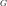
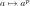
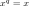
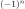
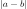
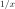
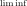
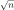

Foundations PDF
Overview PDF
- Mathematics overview
This is the root of the archive: one note per subject, each linking to the notes below it, down to the results themselves. It exists because the two navigations this repository already has answer different questions.cerebro note listandcerebro query by-tagsay what is there; the results graph says what rests on what. Neither says what the subject is about, which is the only question a person actually asks before opening anything.
Foundations PDF
- Foundations overview
The rest of the archive uses sets, functions, quotients and proofs without comment. This area is where those become objects of study rather than instruments: what a set can be, what a proof is, and what follows about the limits of both. It is also, in practice, where the tools live – Zorn's lemma and the ultrafilter lemma are used far more often here than they are discussed.
Logic PDF
- Boolean algebras and Stone's representation theorem definition
The algebra of propositions and the algebra of subsets obey the same laws, and Stone's theorem says this is not an analogy: every Boolean algebra is an algebra of sets. The proof is the ultrafilter lemma, and the sets in question are the ultrafilters – so the points of the representing space are exactly the consistent complete assignments of truth values. - Propositional logic: formulas, assignments and compactness definition
Logic becomes mathematics at the point where formulas stop being notation for arguments and become objects that a proof can quantify over. The whole of propositional logic is then two inductive definitions – one building formulas, one evaluating them – and the theorem that makes the subject infinite rather than merely finitary: satisfiability is decided by finite subsets. - Completeness of propositional logic definition
Soundness says a derivation cannot lie. Completeness says the converse: if a formula is true under every assignment satisfying the hypotheses, some finite derivation of it exists. The proof is not an algorithm – nothing constructs the derivation – but a contrapositive: a set from which nothing false is derivable can be given a model, built out of the syntax itself.
Set Theory PDF
- Relations, equivalence and the quotient of a set definition
Every construction in this archive that identifies things – the integers modulo , a quotient group, a quotient vector space, a quotient topology, the completion of a metric space – is the same construction applied to different data: an equivalence relation, its set of classes, and a check that the structure survives the identification. Writing the set-theoretic half once means each later quotient has only the check left to do.
, a quotient group, a quotient vector space, a quotient topology, the completion of a metric space – is the same construction applied to different data: an equivalence relation, its set of classes, and a check that the structure survives the identification. Writing the set-theoretic half once means each later quotient has only the check left to do. - Partial orders, lattices and the Knaster-Tarski theorem definition
The supremum was introduced for subsets of , where the order is total and the completeness axiom is an assumption about that particular field. Nothing in the definition of a supremum uses either. Stating it for a partial order isolates what the argument needs, and reveals that "every subset has a supremum" – false in , true in a power set – is by itself strong enough to produce fixed points, with no continuity and no metric anywhere in sight.
, where the order is total and the completeness axiom is an assumption about that particular field. Nothing in the definition of a supremum uses either. Stating it for a partial order isolates what the argument needs, and reveals that "every subset has a supremum" – false in , true in a power set – is by itself strong enough to produce fixed points, with no continuity and no metric anywhere in sight. - Well-ordered sets and transfinite induction definition
Induction on works because every non-empty set of natural numbers has a least element – not because the elements are numbers. Isolating that property gives a principle of induction available on any set that can be well ordered, which by the well-ordering theorem is every set. This is what allows a construction to run "along" an arbitrary set rather than along a sequence.
works because every non-empty set of natural numbers has a least element – not because the elements are numbers. Isolating that property gives a principle of induction available on any set that can be well ordered, which by the well-ordering theorem is every set. This is what allows a construction to run "along" an arbitrary set rather than along a sequence. - The axiom of choice and Zorn's lemma definition
Three theorems in this archive are proved by producing an object no construction reaches: a basis of an arbitrary vector space, a maximal ideal of an arbitrary ring, a satisfying assignment for an infinite set of formulas. Each is Zorn's lemma applied to a partial order chosen so that "maximal" means what is wanted. Zorn's lemma is not more than the axiom of choice – they are equivalent – but it is the form in which choice is usable without transfinite recursion. - Maps, invertibility and the canonical factorisation definition
Injectivity and surjectivity are usually introduced as two properties a map may happen to have. They are better read as the two halves of one statement: every map is a surjection followed by an injection, and the surjection is a quotient. The isomorphism theorems of algebra are that sentence, repeated once per structure. - Filters, ultrafilters and the ultrafilter lemma definition
A sequence is a map out of, and the whole theory of convergence built on it inherits that accident: in a space whose points have no countable neighbourhood basis, sequences are too few to detect the closure. A filter carries no index set at all – it is the family of sets a limit would eventually be in – and it is the object that makes convergence work in every topological space. - Cardinality: Cantor's theorem and Cantor-Schroder-Bernstein definition
Counting a finite set means putting it in bijection with an initial segment of. Dropping "finite" from that sentence leaves a definition that still works, and the two theorems below are what make it behave like a notion of size: comparison by injections is antisymmetric, and the scale it measures has no top. - Ordinals and definition by transfinite recursion definition
Transfinite induction proves statements along a well order; it does not build anything. Recursion does, and it is a separate theorem: a construction that at each stage may consult everything built before it is well defined. Ordinals are then the canonical well orders – one for each order type – so that "the length" of a construction becomes an object rather than a manner of speaking. - Set theory overview
Two thirds of this subject is not foundational at all but a toolbox: the quotient construction, the maximality principle and the induction that runs past are used constantly elsewhere, and are collected here because they are about sets and nothing else. The remaining third – cardinality – is where sets become objects of study rather than instruments.
Model Theory PDF
- First-order languages, structures and satisfaction definition
A group, a ring, an ordered field and a graph are the same kind of object seen four times: a set with named operations and relations. Once that is said precisely, "
satisfies the group axioms" becomes a mathematical statement about a pair (a structure, a set of formulas) rather than a description of what is written on the page – and statements about all structures satisfying a set of axioms become available. - Ultraproducts and the theorem of Los definition
Compactness in propositional logic came from a maximal finitely satisfiable set. In first-order logic the same statement needs an actual structure, and the ultraproduct builds one: a single model assembled from a family of models by declaring a statement true when it holds on a set of indices large in the sense of an ultrafilter. What makes it work is that "large" is closed under complement – the only property of ultrafilters used, and exactly the one negation needs. - Elementary substructures and the Lowenheim-Skolem theorems definition
A substructure inherits the quantifier-free statements and nothing more. Asking that it inherit all of them defines an elementary substructure, and the two theorems below say such things are plentiful in both directions: a structure always has a small elementary substructure and always has large elementary extensions. Together they say that first-order theories cannot control the size of their models – which is why "the" model of a theory is almost never a well-formed phrase. - Logic overview
Logic begins when a formula stops being notation for an argument and becomes an object a theorem can quantify over. From that point the subject has a fixed shape: define what it means for a formula to be true in a structure, define separately what it means to be derivable, and then compare the two. Everything below is that comparison, or a consequence of it.
Proof Theory PDF
- A proof system for propositional logic: soundness and the deduction theorem definition
Truth assignments say which formulas are true; they say nothing about what can be derived. Proof theory begins by writing down a derivation relation as a finite combinatorial object and then comparing the two notions. Soundness is the easy direction and is proved by induction on derivations; that induction is the reason the axioms are chosen as schemes rather than as a list.
Computability PDF
- Computability, the halting problem and Rice's theorem definition
The undecidability results do not depend on which machine model is chosen; they depend on two properties any reasonable model has – a program can be simulated by another program, and a program with a parameter frozen is again a program. Taking those two properties as the definition isolates what the diagonal argument actually uses, and makes the theorems below independent of any coding.
Algebra PDF
Algebra PDF
- Binary operation definition
A binary operation is the single ingredient from which every algebraic structure on this shelf is built: a rule that combines two elements of a set into a third element of the same set. - Algebra overview
Algebra studies sets with operations, and it studies them through the maps that respect the operations rather than through the elements. That choice is what makes the subject repeat itself: the same three theorems – a quotient exists, a homomorphism factors through it, the pieces reassemble – are proved once for groups, once for rings, once for vector spaces, once for modules, with the proofs differing only in what has to be checked to be well defined.
Linear Algebra PDF
- Vector space definition
A vector space endows an abelian group with a compatible action of a field of scalars – the arena of linear algebra and the local model of every geometry considered here. - Span, linear independence, bases and dimension definition
A vector space has no distinguished elements, so everything one can say about it must be said through the subsets that generate it. That a number can be attached to the space at all – the same for every basis – is the one substantive theorem here, and it rests on a single exchange argument. Everything later that "counts dimensions" is spending it. - Linear maps, quotient spaces and the rank-nullity theorem definition
For groups, a homomorphism is measured by one subgroup, its kernel. For vector spaces the same is true and, because dimension exists, the measurement becomes a number: what the map loses plus what it keeps is what it started with. Rank-nullity is the first isomorphism theorem with a dimension count attached. - Bilinear forms, quadratic forms and Sylvester's law of inertia definition
An inner product is a symmetric bilinear form that is positive definite. Dropping definiteness leaves an object that no longer measures lengths but still classifies: over the reals, a symmetric form is determined up to change of basis by two integers, and no basis-dependent computation can produce anything else. That is what a normal form theorem is for. - Inner product space definition
An inner product equips a real vector space with lengths and angles, turning linear algebra into geometry. - Cauchy-Schwarz inequality theorem
The Cauchy–Schwarz inequality is the one estimate that makes the geometry of an inner product space work: it is what lets one define the angle between two vectors and prove the triangle inequality. - Dual spaces, annihilators and the transpose definition
Every subspace can be described in two ways: by generators, or by the linear equations it satisfies. The dual space is the home of those equations, and the dictionary between the two descriptions – subspace against annihilator, map against transpose – reverses inclusions and exchanges kernels with images. In finite dimension the dictionary is perfect, and the failure of that perfection in infinite dimension is what makes functional analysis a subject. - The determinant as the alternating multilinear form definition
The determinant is usually met as a formula and then shown to have properties. Reversing that – asking for a function of the columns that is linear in each and vanishes when two agree – turns out to determine it up to a constant, so the formula becomes a consequence and every identity about determinants becomes an application of uniqueness rather than a computation. - Eigenvalues, the characteristic polynomial and Cayley-Hamilton definition
A linear map is understood when a basis is found in which it acts independently on each coordinate. Eigenvectors are the candidates for such a basis, and the determinant turns the search for them into a question about the roots of one polynomial – after which everything depends on whether the field contains those roots and whether they are distinct. - Linear algebra overview
Linear algebra is the one algebraic theory that is finished: over a field, every module is free, every short exact sequence splits, and a single integer classifies a space up to isomorphism. That is why it is the model the rest of algebra is measured against, and why so much of geometry and analysis reduces to it. - The spectral theorem for symmetric operators definition
Not every operator is diagonalisable, and over a rotation has no eigenvector at all. Symmetry with respect to an inner product rules that out completely: a symmetric operator has an orthonormal basis of eigenvectors, so it is not merely diagonalisable but diagonal in coordinates that preserve the geometry. The proof needs no algebraically closed field – only compactness.
Group Theory PDF
- Group definition
A group is the least structure in which one can meaningfully undo operations: a binary operation that is associative, has an identity, and in which every element is invertible. - Abelian group definition
An abelian group is a group whose operation ignores the order of its arguments – the additive skeleton of rings, fields, and vector spaces. - Group homomorphism definition
A homomorphism is a map between groups that respects their operations – the notion of structure-preserving map for groups. - Uniqueness of the identity element theorem
In a group the identity is not merely assumed to exist – it is forced to be unique, which is what licenses the article in "the identity". - Subgroups, the subgroup criterion and generation definition
A group is rarely met alone: what one has is a group together with the subsets of it that are again groups, and almost every construction below – cosets, kernels, generated subgroups, orbits – produces one of those. Two small results make the supply manageable: a one-line test for being a subgroup, and the fact that subgroups are closed under intersection, which is what allows "the smallest subgroup containing " to be defined without ever building it.
" to be defined without ever building it. - Normal subgroups and the quotient group definition
The set of cosets always exists; what is not automatic is that it carries a group structure. The obstruction is measured exactly by one condition on the subgroup, and the condition turns out to be the same as "is the kernel of some homomorphism". Normality is therefore not a technical hypothesis but the answer to "which subgroups can be divided out". - The isomorphism theorems for groups theorem
The canonical factorisation of a map says every function is a quotient followed by an injection. A homomorphism is a map that respects the operation, so its factorisation must respect it too – and the equivalence relation involved is the one whose classes are the cosets of the kernel. The three theorems below are that observation, plus the two standard ways of comparing quotients. - The order of an element and cyclic groups definition
The subgroup generated by a single element is the smallest interesting one, and it is completely understood: there are exactly two cyclic groups up to isomorphism for each possible size. That classification is the first place where a family of groups is described once and for all, and it turns questions about an element into arithmetic in .
. - Cosets, the index and Lagrange's theorem definition
A subgroup cuts the group into translated copies of itself, all of the same size. That single observation is the whole of Lagrange's theorem, and it is the reason finite group theory is a subject with arithmetic in it: the order of a subgroup, and hence the order of every element, divides the order of the group before any structure is examined. - Group actions, orbits and the orbit-stabiliser theorem definition
A group was defined by axioms, but groups arise as symmetries: the axioms are what the invertible transformations of a set satisfy. An action is the bridge back – a homomorphism into a symmetric group – and it converts counting problems about a set into arithmetic in the group, because an orbit is a quotient by a subgroup. - The symmetric group and the sign of a permutation definition
Every finite group embeds in a symmetric group, so is where finite group theory happens. It carries one invariant that costs nothing and decides a surprising amount: a homomorphism onto a group of two elements. Its existence is the only non-formal step – a permutation can be written as a product of transpositions in many ways, and the claim is that the parity of their number does not depend on the way.
is where finite group theory happens. It carries one invariant that costs nothing and decides a surprising amount: a homomorphism onto a group of two elements. Its existence is the only non-formal step – a permutation can be written as a product of transpositions in many ways, and the claim is that the parity of their number does not depend on the way. - Cauchy's theorem and the Sylow theorems theorem
Lagrange's theorem forbids subgroups of the wrong size and promises none. The Sylow theorems are the partial converse: for each prime power dividing the order exactly, subgroups of that size exist, they are all conjugate, and their number is constrained modulo the prime. All three proofs are the same technique – let the group act on a set built for the purpose and count the orbits. - Composition series, Jordan-Holder and solvable groups definition
Taking a normal subgroup and its quotient splits a group into two smaller ones. Iterating gives a list of pieces that admit no further splitting – and the theorem is that the list does not depend on how the splitting was carried out. Finite groups therefore have well-defined prime factors, with the caveat that, unlike for integers, the factors do not determine the group. - Direct and semidirect products definition
A normal subgroup and its quotient do not determine a group: the two pieces can be assembled in several ways, and which one occurred is extra data. The recognition theorems below say when a group is an assembly of two of its subgroups, and the semidirect product is the first construction in which the assembly is genuinely non-trivial – the action of one factor on the other. - Free groups and presentations definition
Every group so far has been given by exhibiting it. A presentation does the opposite: it names generators and relations and asserts that nothing else holds. Making that precise requires a group in which no relation holds at all, and a universal property saying that maps out of it are unconstrained – which is exactly what determines it up to unique isomorphism. - Group theory overview
A group is one associative, invertible operation and nothing else, which is little enough that the axioms fit on a line and strong enough that finite groups have an arithmetic. The subject splits cleanly in two: what a single group is made of, and how a group acts on something else – with the second usually answering questions about the first.
Ring Theory PDF
- Rings, ideals and the quotient ring definition and the polynomials over a field carry two operations, and the theory of one operation – groups – does not see the interaction between them. A ring is the axiomatisation of that interaction, and the substitute for "normal subgroup" is not a subring but an ideal: the condition needed to divide out is absorption under multiplication, and subrings do not have it.
- Modules, quotients and exact sequences definition
A module is a vector space over a ring, and dropping the field is not a small change: without inverses one cannot divide, so a spanning set need not contain a basis and dimension does not exist. What survives is everything formal – submodules, quotients, homomorphism theorems – and what replaces dimension is the language of exact sequences, which measures how far a module is from being free by recording the maps around it. - Rings and commutative algebra overview
A ring has two operations, and the whole subject is about their interaction – which is why the substructure one may divide by is not a subring but an ideal, absorption rather than closure being what the quotient needs. After that the questions are arithmetic: does factorisation exist, is it unique, and is every ideal finitely generated.
Field Theory PDF
- Field extensions, the tower law and minimal polynomials definition
An extension of fields is a vector space, and that single observation is what makes field theory finite: questions about which numbers can be adjoined to become questions about dimensions, which multiply along towers. The classical impossibility results – duplicating the cube, trisecting an angle – are the tower law and nothing else.
become questions about dimensions, which multiply along towers. The classical impossibility results – duplicating the cube, trisecting an angle – are the tower law and nothing else. - Field theory overview
A field extension is a vector space, and that single observation makes the subject finite: questions about which numbers can be adjoined become questions about dimensions, and dimensions multiply along towers. The classical impossibility results are that multiplication and nothing else. - Splitting fields and their uniqueness theorem
A polynomial with no root can be given one, by a construction that costs nothing: quotient the polynomial ring by an irreducible factor. Iterating produces a field in which the polynomial factors completely, and the substance of this note is that the field so produced does not depend on the choices made – which is what makes "the" splitting field, and with it the Galois group, well defined. - Finite fields definition
There is exactly one field with elements for every prime power , and none of any other size. That is an unusually complete classification, and every part of it comes from a single observation: in characteristic
elements for every prime power , and none of any other size. That is an unusually complete classification, and every part of it comes from a single observation: in characteristic  the map
the map 
is a field homomorphism, so the equation
is linear-like and its solution set is a field.
Commutative Algebra PDF
- Integral domains, fields, prime and maximal ideals definition
Two properties a ring may have – no zero divisors, every non-zero element invertible – turn out to be properties of ideals of a larger ring, read off from the quotient. That translation is what makes commutative algebra geometric: a prime ideal is a point of a space, and the dictionary below is the first entry of it. - Polynomial rings, division and roots definition
A polynomial is not a function – over a finite field two different polynomials can induce the same function – but a formal object, a finitely supported sequence of coefficients. Keeping the distinction is what makes the degree an invariant, and the degree is what makes division with remainder possible; everything else in this note is that division, applied. - Euclidean domains, principal ideals and unique factorisation definition
Unique factorisation in is usually proved from Euclid's lemma, and Euclid's lemma from the division algorithm. Each of those steps is a separate property of the ring, and separating them shows what the theorem costs: division gives principal ideals, principal ideals make irreducible elements prime, and primality gives uniqueness. The same chain applies verbatim to polynomials over a field. - Noetherian rings and the Hilbert basis theorem definition
Principal ideal domains were shown to admit no infinite ascending chain of ideals, and that alone gave the existence half of unique factorisation. Isolating the chain condition – rather than the principality – gives a class of rings closed under quotients and, by Hilbert's theorem, under adjoining a variable. That closure is why algebraic geometry can work with finitely many equations. - The Chinese remainder theorem definition
Solving congruences one modulus at a time is possible exactly when the moduli are unrelated, and the theorem says what "unrelated" means for ideals: their sum is everything. The statement is an isomorphism of rings, so it does not merely produce a solution but identifies the whole ring with a product – which is how a computation is split into independent ones.
Analysis PDF
Analysis PDF
- Analysis overview
Analysis is one subject because it has one hypothesis: completeness. Every existence theorem below – a limit, a supremum, a root, a fixed point, an integral, a solution of a differential equation – is completeness of some space, applied to a sequence built for the purpose. Everything else is an estimate.
Real Analysis PDF
- Supremum and infimum definition
The least upper bound is the notion that makes different from : a bounded set of rationals need not have a rational least upper bound, and the whole of analysis rests on the fact that a bounded set of reals always has a real one. - Completeness of the real numbers definition
Completeness of the real numbers - Limit of a sequence definition
Limit of a sequence - Monotone convergence theorem theorem
The first theorem of the course that genuinely uses completeness, and the one every later convergence argument is built on: monotonicity plus a bound is enough, no candidate limit required. - Bolzano–Weierstrass theorem definition
Boundedness alone gives no limit:
is bounded and does not converge. What it does give is a subsequence that converges, and that is enough for almost every compactness argument in a first course. - The absolute value and the triangle inequality definition
Every convergence proof in the course is an estimate on
, and every one of them splits that estimate through an intermediate point. The two lines below are the whole reason that move is legal, so they belong before the first , not in a footnote to it.
, not in a footnote to it. - Limits and continuity definition
Limits and continuity - Continuous functions on a compact interval theorem
Two properties of a continuous function on![\([a,b]\)](m/0a90b3bc64f7c9d00490784b86efd520680b7522.svg) that fail on an open or unbounded interval, and both come from Bolzano–Weierstrass: it is bounded, and it attains its bounds.
that fail on an open or unbounded interval, and both come from Bolzano–Weierstrass: it is bounded, and it attains its bounds. - Cauchy sequences and the completeness criterion definition
The definition of convergence names the limit, so it cannot be used to prove that a limit exists without producing a candidate first. The Cauchy condition removes that obstacle: it speaks only about the terms of the sequence, and in it is equivalent to convergence. - The algebra of limits theorem
A first course proves a handful of limits from the definition and then never does so again: from here on limits are computed by combining ones already known. These are the rules that make that legitimate, and the reason they are theorems rather than notation is that each one needs the triangle inequality and a boundedness argument to hold at all. - The limit of a function and its sequential characterisation definition
The limit of a function is the same idea as the limit of a sequence with the index replaced by a continuous variable, and the proposition below says so precisely. It is the bridge that lets every theorem about sequences be spent on functions. - The algebra of continuous functions and composition theorem
The sequential characterisation of the limit was proved so that the theorems about sequences could be spent on functions without being proved twice. This note spends them: the algebra of limits becomes the algebra of continuous functions, and with it every polynomial and rational function is continuous for free. Composition is the one rule that does not come from a sequence argument in the same way, and it is the one that needs care. - One-sided limits and the discontinuities of a monotone function definition
A limit either exists or it does not, and the two-sided definition gives no vocabulary for how it fails. Splitting it in two supplies that vocabulary, and it immediately pays: a monotone function turns out to have both one-sided limits everywhere, so the only discontinuity it can have is a jump. - The intermediate value theorem theorem
The first theorem of the course whose content is genuinely topological: it says that a continuous function on an interval skips no value, and it is false over for the same reason everything else in analysis is. - The continuous image of an interval and the continuous inverse theorem
The intermediate value theorem and the extreme value theorem are usually stated as facts about individual values. Put together they say something structural – a continuous function maps intervals to intervals, and compact intervals to compact intervals – and that is the form needed to invert one. The existence of , of the inverse trigonometric functions and of every -th root as a continuous function is this theorem, not a construction.
, of the inverse trigonometric functions and of every -th root as a continuous function is this theorem, not a construction. - The derivative definition
The derivative is a limit, so everything proved about limits applies to it unchanged. The one implication worth isolating at once is that differentiability is strictly stronger than continuity. - The rules of differentiation theorem
Differentiating from the definition is done exactly once per elementary function; everything after that is these three rules. The chain rule is the one whose obvious proof – multiply and divide by – is wrong, because that quantity can vanish arbitrarily close to
– is wrong, because that quantity can vanish arbitrarily close to  . The repair is to make the offending quotient into a function that is continuous at the point, which is the argument below.
. The repair is to make the offending quotient into a function that is continuous at the point, which is the argument below. - Series and convergence of the partial sums definition
A series is not a new object: it is a sequence, the sequence of its partial sums, and every statement about series is a statement about that sequence. Keeping this in view is what makes the convergence tests proofs rather than recipes. - Absolute convergence and the comparison test theorem
Two tools, and the second is the reason the first is worth having: a series of non-negative terms is a monotone sequence of partial sums, so its convergence is decided by boundedness alone – and absolute convergence reduces the general case to that one. - The mean value theorem theorem
Everything a first course deduces from the derivative – monotonicity, constancy, Taylor's remainder, the sign tests – goes through the mean value theorem, and the mean value theorem goes through Rolle. Three short proofs, in order of dependence. - Cauchy's mean value theorem and de l'Hopital's rule theorem
The mean value theorem compares a function with the identity. Cauchy's version compares two functions with each other, and that single change of viewpoint is what makes an indeterminate quotient tractable: the ratio of the increments becomes the ratio of the derivatives at one common point. De l'Hopital's rule is that observation with a limit taken. - Differentiability in several variables definition
In one variable the derivative can be defined as a limit of quotients because dividing by is available. In several it is not, and the definition that survives is the one that was really meant all along:
is available. In several it is not, and the definition that survives is the one that was really meant all along:  is differentiable at when it is approximated near by a linear map, with an error small compared to the displacement. Partial derivatives are then a consequence, not the definition – and the gap between the two is where every counterexample in the subject lives.
is differentiable at when it is approximated near by a linear map, with an error small compared to the displacement. Partial derivatives are then a consequence, not the definition – and the gap between the two is where every counterexample in the subject lives. - The inverse and implicit function theorems definition
Differentiability says a map is approximated by a linear one; these two theorems say that where the linear approximation is invertible, so is the map, locally. They are the licence for every coordinate change in analysis and geometry – a chart on a manifold, a change of variables in an integral, a constraint solved for one variable – and both are the contraction principle with the derivative used to build the contraction. - Constrained extrema and Lagrange multipliers definition
An unconstrained extremum has vanishing gradient; a constrained one has a gradient that need not vanish but must be normal to the constraint, because only the directions along the constraint are available to move in. The multiplier is the coefficient of that normality, and it is produced – not postulated – by the implicit function theorem. - Convex functions and the second derivative definition
Convexity is defined without any derivative at all, which is why it survives where differentiability does not; when the derivatives exist, the mean value theorem identifies it with a sign condition. - Taylor's theorem with the Lagrange remainder definition
A polynomial that matches derivatives at a point is easy to write down; what makes it useful is a formula for the error, and Taylor's theorem gives one that is exact, at an unknown point. - Taylor's theorem with the Peano remainder theorem
The Lagrange remainder is an identity with an unknown point in it, and it asks for one more derivative than the polynomial uses. The Peano form asks for no extra derivative and gives no identity – only the rate at which the error vanishes. That is weaker, and it is the form every limit computation and every local extremum test actually needs. - Extrema in several variables and the second differential theorem
The one-variable story – a vanishing derivative at an interior extremum, a sign condition on the second derivative to decide which – survives verbatim, with the second derivative replaced by a quadratic form. The new phenomenon is that a form can be neither positive nor negative definite, and the point is then neither a maximum nor a minimum: a possibility with no one-dimensional analogue. - Uniform continuity and the Heine–Cantor theorem definition
Continuity allows to depend on the point; uniform continuity does not. The distinction is invisible on a closed bounded interval – that is the theorem below – and decisive everywhere else:
to depend on the point; uniform continuity does not. The distinction is invisible on a closed bounded interval – that is the theorem below – and decisive everywhere else: 
on![\((0,1]\)](m/567ffe96ce52fb1227e476aaa24b411bd4d4db38.svg) is continuous and not uniformly so.
is continuous and not uniformly so. - The Riemann integral definition
The integral is defined by squeezing: approximate the area from below and from above, and call the function integrable when the two approximations meet. Nothing about the definition presumes continuity; that hypothesis enters only to prove that they do meet. - Linearity, additivity and monotonicity of the integral theorem
These are the properties the integral is used through, and none of them is visible in the definition: the definition is about suprema of lower sums, and a supremum of a sum is not the sum of the suprema. Each one therefore has to be proved, and the Riemann criterion is what makes each proof short – work with the gap , never with the integral itself.
, never with the integral itself. - The fundamental theorem of calculus theorem
Differentiation and integration were defined independently, by limits of difference quotients and by limits of sums. The two theorems below say they undo each other – which is what makes the integral computable at all. - Integration by parts and substitution theorem
Neither of these is a technique. Each is a differentiation rule read backwards through the fundamental theorem: the product rule becomes integration by parts, the chain rule becomes substitution. Stating them that way is what fixes the hypotheses – the versions taught as manipulations quietly assume a continuous derivative, and it is worth seeing where that assumption enters. - Limit superior and limit inferior theorem
A bounded sequence need not converge, but two numbers are always attached to it, and they exist without any hypothesis at all. That is their point: and
and 
turn "does this converge?" into an equation between two quantities that are already there, which is what the root test and every later oscillation argument need. - Pointwise and uniform convergence definition
A sequence of functions has two obvious notions of convergence, and the whole point of separating them is that the naive one preserves nothing. Pointwise convergence is a statement about each point separately, made with a different at each; uniform convergence asks for one that works everywhere, and that single quantifier change is exactly what carries continuity, integrability and the exchange of limits across the limit.
at each; uniform convergence asks for one that works everywhere, and that single quantifier change is exactly what carries continuity, integrability and the exchange of limits across the limit. - Line integrals, exact forms and Green's theorem definition
The fundamental theorem of calculus says the integral of a derivative over an interval is determined by the boundary. Everything in this note and the next is that sentence in higher dimension, and the pattern is always the same: an integral of a derivative over a region equals an integral of the function over the boundary. Green's theorem is the first case, and the case in which the hypotheses can still be checked by hand. - The Archimedean property and the density of the rationals theorem
Completeness is an axiom about suprema; the two statements below are the first things it buys. Every later argument that manufactures an index out of an rests on one of them, which is why they come before anything about convergence. - Monotone functions are integrable, and the mean value theorem for integrals theorem
Continuity is sufficient for integrability, not necessary, and the cheapest demonstration of that is monotonicity: a monotone function may have infinitely many discontinuities and is integrable all the same, because on a partition into equal pieces its oscillations telescope. The mean value theorem for integrals is the other half of this note – the statement that an integral of a continuous function is a value of it, which is what turns the first fundamental theorem into a one-line argument. - Monotonicity and the sign of the derivative theorem
The derivative is defined pointwise and monotonicity is a statement about pairs of points, so nothing connects them locally. The mean value theorem is the bridge, and it is the only one: every "the function increases because the derivative is positive" argument in the course is this corollary, and the asymmetry in it – the strict version goes one way only – is what the standard mistake gets wrong. - The ratio and root tests theorem
Both tests do the same thing: they compare a series with a geometric one that dominates it eventually. Neither says anything when its limit is , and neither can, since
, and neither can, since  and
and  both hit that case with different answers.
both hit that case with different answers. - Power series and the radius of convergence definition
A power series converges on an interval and diverges outside it, and the radius that separates the two is not an extra hypothesis: it is determined by the coefficients, through the same the root test already used. Everything else – that the sum is continuous, that it may be integrated and differentiated term by term – follows because the convergence is uniform on every closed subinterval. - Real analysis overview
The largest part of the archive, and the one whose order matters most: almost every note here is used by the next. The sequence below is that order. It has one turning point – the completeness axiom – and everything before it is definitions, everything after it is consequences. - Surface integrals, the divergence theorem and Stokes' theorem definition
The two theorems of this note are what make the differential form of a physical law equivalent to its integral form: the flux of a field out of a region is the integral of its divergence, and the circulation around a loop is the flux of its curl. Every conservation law in mathematical physics is written twice for this reason, and the translation is these identities. - The Cauchy criterion for series, the harmonic series and condensation theorem
The term test says a convergent series has terms tending to zero, and says nothing about the converse. The harmonic series is the standard counterexample, and the condensation test is the clean way to see both it and the whole family at once – the comparison objects every later test is calibrated against.
at once – the comparison objects every later test is calibrated against. - The alternating series test theorem
Every test so far decides convergence by comparing absolute values, and so can only ever prove absolute convergence. This is the one test in a first course that uses cancellation, and it is therefore the source of every example of a series that converges but not absolutely. - Uniform bounds on the Taylor remainder theorem
Taylor's theorem gives the remainder at an unproved point , which is not a number anyone can produce. What turns it into an estimate is a bound on the derivatives, and if that bound is uniform in the order the Taylor polynomials converge to the function outright. Stated for a hypothesis on the derivatives rather than for any particular function: the sine and the exponential are the cases one meets, and neither is the content.
, which is not a number anyone can produce. What turns it into an estimate is a bound on the derivatives, and if that bound is uniform in the order the Taylor polynomials converge to the function outright. Stated for a hypothesis on the derivatives rather than for any particular function: the sine and the exponential are the cases one meets, and neither is the content.
Complex Analysis PDF
- Complex analysis overview
One hypothesis – that a difference quotient converges along every direction of the plane rather than along a line – and the subject becomes rigid in a way real analysis never is. A function differentiable once is differentiable infinitely often; its values on a small arc determine it everywhere; it cannot have an interior maximum of modulus; and a single number per singularity computes an integral. Each of those is a corollary of the same integral formula. - Holomorphic functions and the Cauchy-Riemann equations definition
Complex differentiability is written like the real definition and is a far stronger hypothesis, because the limit is required along every direction in a plane rather than along a line. The Cauchy-Riemann equations are that extra content made explicit, and everything surprising in the subject – that one derivative forces infinitely many, that local values determine global ones – descends from them. - Complex integration and Cauchy's theorem definition
The integral of a holomorphic function around a closed curve vanishes. Everything else in complex analysis is a corollary of that sentence, and the sentence is a triangle inequality plus a bisection argument – no hypothesis on the derivative beyond its existence, which is what makes Goursat's version of the proof the right one. - The Cauchy integral formula and analyticity theorem
A holomorphic function is determined inside a disc by its values on the boundary circle, by an explicit formula. Expanding the kernel of that formula in a geometric series turns the function into a power series, and with that one step complex differentiability – a hypothesis about one derivative – becomes analyticity, a statement about all of them. Nothing in real analysis behaves like this. - Zeros, the identity theorem and the maximum principle theorem
Analyticity makes a holomorphic function rigid in two ways that have no real analogue: its values on any set with an accumulation point determine it everywhere, and its modulus can have no interior maximum. Both are the local power series expansion, read once for the zeros and once for the boundary. - Laurent series and isolated singularities theorem
Away from the points where it misbehaves, a function is still holomorphic, and the expansion adapted to an annulus rather than a disc allows negative powers. How many of them appear classifies the singularity completely into three cases – removable, pole, essential – and the classification is what makes the residue calculus mechanical. - The residue theorem and the argument principle theorem
Cauchy's theorem says a contour integral vanishes when there is nothing inside. The residue theorem says what it is when there is: one number per singularity, read off the Laurent expansion. That turns contour integration into arithmetic, and it is the reason complex analysis is a computational tool in mathematical physics rather than only a structural theory.
Measure Theory PDF
- Sigma-algebras, measures and measurable functions definition
The Riemann integral partitions the domain, which forces the integrand to be nearly continuous and makes limits fragile: a pointwise limit of Riemann integrable functions need not be integrable. Measure theory partitions the range instead, and to do so needs a notion of size for the preimages – a set function that is countably additive on a family closed under countable operations. Everything else follows from those two words. - The Lebesgue integral and the convergence theorems definition
The integral is built in three steps – indicator functions, then finite non-negative combinations of them, then suprema – and each step is forced by the one before. What the construction buys is the exchange of limit and integral under hypotheses that are about the functions rather than about the convergence being uniform, and those three theorems are the reason the Lebesgue integral replaced the Riemann one. - Square-integrable functions and the completeness of L2 definition
The Hilbert space theory was developed abstractly, with no example that was not finite-dimensional. This note supplies the one that matters: the square-integrable functions on a measure space, which are complete because the convergence theorems are strong enough to turn a Cauchy sequence in norm into a pointwise limit almost everywhere. - Product measures and the theorems of Tonelli and Fubini definition
Computing a double integral by integrating one variable at a time is the most-used manoeuvre in analysis and the one most often performed without justification. It is a theorem, it is false without hypotheses, and the hypotheses come in two flavours: non-negativity, which is Tonelli, and integrability, which is Fubini and is checked by Tonelli. The proof is a monotone class argument, and that argument is worth isolating because it is how almost every statement about a -algebra defined by generation gets proved.
-algebra defined by generation gets proved.
Functional Analysis PDF
- Normed spaces and the equivalence of norms in finite dimension definition
A norm is a metric compatible with the linear structure, and there are many of them on the same space. In finite dimension the choice turns out not to matter for anything topological – all norms are equivalent, so convergence, continuity and compactness are properties of the vector space alone. In infinite dimension the statement is false, and its failure is the beginning of functional analysis. - Uniform boundedness, open mapping and closed graph definition
Three theorems of Banach space theory have the same one-line proof scheme: cover the space by countably many closed sets, invoke the Baire category theorem to find one with interior, and translate that interior back to the origin by linearity. Completeness enters only through Baire, and each conclusion is a statement that pointwise information forces uniform information. - Hilbert spaces: projection, Riesz representation and orthonormal bases definition
A Banach space has a norm; a Hilbert space has an inner product, and with it the whole geometry of orthogonality survives into infinite dimension. Two theorems carry that geometry across: the nearest point in a closed convex set exists, and every continuous functional is an inner product. After them, a separable Hilbert space is coordinates again. - Equicontinuity and the Arzela-Ascoli theorem definition
In a space of functions, closed and bounded is not enough for compactness: the unit ball of a space of functions is never compact in infinite dimension. Arzela-Ascoli identifies what has to be added – uniform control of the modulus of continuity across the whole family – and it is the compactness criterion that every existence proof by approximation ultimately uses. - Functional analysis overview
Functional analysis is linear algebra on spaces where the unit ball is not compact. Every difference from the finite-dimensional theory traces back to that one fact, and every theorem below is a substitute for something compactness used to provide: a basis, a limit, a bound, a separating functional. - The Hahn-Banach theorem definition
In finite dimension the dual space is as large as the space, because a basis produces functionals. In infinite dimension no basis is available and the dual could conceivably be trivial. Hahn-Banach rules that out: a functional defined on a subspace and dominated by a convex gauge extends to the whole space with the same bound, so there are always enough functionals to separate points.
Harmonic Analysis PDF
- Fourier series, Fejer's theorem and Parseval's identity definition
Expanding a periodic function in exponentials is an orthogonal projection in Hilbert space, so convergence in and Parseval's identity are free – provided the exponentials are complete. That completeness is the one thing the abstract theory cannot supply, and it is proved here by an approximation argument: the Cesaro means of the series converge uniformly for a continuous function, which is Fejer's theorem.
and Parseval's identity are free – provided the exponentials are complete. That completeness is the one thing the abstract theory cannot supply, and it is proved here by an approximation argument: the Cesaro means of the series converge uniformly for a continuous function, which is Fejer's theorem. - The Fourier transform, inversion and Plancherel definition
On a bounded interval the frequencies are discrete and the expansion is a series; on the line they form a continuum and the sum becomes an integral. What survives is what matters for mathematical physics: differentiation becomes multiplication, convolution becomes multiplication, and the transform preserves the norm – so a differential equation becomes an algebraic one.
Ordinary Differential Equations PDF
- Existence and uniqueness for ordinary differential equations theorem
An initial value problem is a differential statement, and differential statements are hard to iterate. The move that makes the whole theory work is to turn it into an integral equation, which says the same thing and is a fixed-point equation for an operator on a space of functions. Existence and uniqueness are then not a new argument: they are the contraction principle, applied to that operator. - Sturm-Liouville problems and eigenfunction expansions definition
Separating variables in a partial differential equation always produces the same kind of ordinary problem: a second-order operator on an interval with boundary conditions, whose eigenfunctions are then used as a basis. Sturm-Liouville theory is the statement that this is not luck – the operator is symmetric for a suitable inner product, so the spectral theorem applies in spirit, giving real eigenvalues and orthogonal eigenfunctions.
Partial Differential Equations PDF
- First-order equations and the method of characteristics definition
A first-order partial differential equation constrains the derivative of the unknown along one direction at each point. Following that direction turns the equation into an ordinary one, so the whole theory is the existence theorem for ordinary equations transported along a family of curves – and the failures of the method, where characteristics cross or run along the data, are the failures of the problem itself. - Harmonic functions, the mean value property and the Dirichlet problem definition
Laplace's equation is the model elliptic equation and the stationary case of both the heat and the wave equations. Its solutions are as rigid as holomorphic functions, for the same reason – in the plane they are exactly the real parts of holomorphic functions – and the mean value property is the statement from which all the rigidity follows. - Partial differential equations overview
There is no theory of partial differential equations, only theories of particular ones, and the division that organises them is by how information travels. Three model equations exhaust the second-order linear cases, and each is met here through the statement that decides uniqueness for it – a maximum principle, an explicit formula, an energy identity. - The heat equation: separation of variables and the maximum principle definition
The heat equation is the model parabolic equation, and it behaves in ways the wave equation does not: it smooths data instantly, it cannot be run backwards, and its solutions attain their extremes at the initial or boundary data. The last of those is a maximum principle, it is proved in half a page, and it gives uniqueness and stability at once. - The wave equation: d'Alembert's formula and energy definition
The wave equation is the model hyperbolic equation and is the opposite of the heat equation in every respect: it does not smooth, it runs equally well in both time directions, and it propagates at finite speed. All three are visible in the explicit solution on the line, and the statement that survives in higher dimension is the energy identity, which gives uniqueness without any formula at all.
Approximation Theory PDF
- The Weierstrass approximation theorem definition
Taylor's theorem approximates a smooth function near a point and says nothing away from it. Weierstrass' theorem is the opposite statement: every continuous function on a compact interval, with no differentiability whatever, is a uniform limit of polynomials. The proof below is constructive – the polynomials are written down – and the computation that makes it work is an identity about a binomial sum.
General Topology PDF
- Metric spaces and completeness definition
Every convergence argument of the first course used one thing about: a distance, and the triangle inequality that lets an estimate be split through an intermediate point. Nothing in those arguments needed the order, the field structure or the dimension. Abstracting the distance is therefore not a generalisation for its own sake – it is the statement of what was actually used, and it is what makes the same proofs serve sequences of functions, of matrices, and of points of  .
. - The contraction mapping principle definition
One theorem, proved once, in a complete metric space, and then spent three times: on the existence and uniqueness of solutions of a differential equation, on the inverse function theorem, and on the implicit function theorem. What it says is that a map which shrinks distances by a fixed factor has exactly one fixed point, and that the point is the limit of iterating the map from anywhere at all – so the proof is also an algorithm.
Topology PDF
Topology PDF
- Topology overview
Every convergence argument in the first analysis course used the distance only to say which sets are open. Topology is what remains after that observation is taken seriously: the open sets are kept, the distance is discarded, and the theorems that still hold are exactly the ones that never needed it.
General Topology PDF
- Topological spaces, bases and generated topologies definition
In a metric space the open sets were defined from the distance, and then every argument about continuity and convergence was rewritten in terms of them. A topology is what is left when the distance is discarded and only the family of open sets is kept – which is exactly as much as those arguments used, and strictly less than a metric, since some useful families of open sets come from no metric at all. - Interior, closure, boundary and density definition
Every subset of a topological space has a largest open set inside it and a smallest closed set around it. The two operations are dual, they are defined by intersections rather than by construction, and the local characterisation below – a point is in the closure when every neighbourhood meets the set – is what makes them usable in proofs. - Continuous maps, homeomorphisms and topological invariants definition
Continuity was defined with and , then shown to mean that preimages of open sets are open. Only the second formulation survives the loss of the metric, so it becomes the definition – and it is a better one, because it makes continuity manifestly about the two topologies and nothing else. A homeomorphism is then the notion of sameness the subject is organised around. - Subspace, product and quotient topologies definition
Three constructions produce almost every space one meets, and each is defined the same way: by the maps it is required to make continuous. Stating them by their universal properties rather than by a formula is what keeps the proofs short – and it is what shows that the product topology, which looks like the wrong definition for infinite products, is the only reasonable one. - Hausdorff spaces and separation definition
The axioms of a topological space allow a topology so coarse that two points cannot be told apart by open sets, and then a sequence can converge to everything at once. Nothing in the general theory forbids it; a separation axiom is the extra hypothesis under which the statements one expects – limits are unique, compact sets are closed – become true again. - Compactness and the Heine-Borel theorem definition
Every theorem of the first course about continuous functions on a closed interval – boundedness, attainment of extrema, uniform continuity – used the same feature of and nothing else: a local condition holding at every point can be made to hold uniformly, because finitely many neighbourhoods suffice. Compactness is that feature, named, and it is what makes those proofs transfer. - The metric topology and continuity in metric spaces theorem
A metric determines a topology, and two different metrics can determine the same one – so a topological statement about a metric space is a statement about less than the metric. This note fixes the translation in both directions and records the one thing metric spaces have that general spaces do not: the countable basis of balls at each point, which is what makes sequences sufficient. - Total boundedness and compactness in metric spaces definition
Compactness was defined by open covers and Bolzano-Weierstrass by subsequences, and in the two arguments were used interchangeably. In a metric space that is a theorem, and it has a third face: complete plus totally bounded. Each formulation is the one that makes some proof short, and the equivalence is what allows moving between them without comment. - The Baire category theorem definition
Completeness has so far produced limits of specific sequences. The Baire theorem extracts something else from it: a complete space cannot be exhausted by countably many negligible pieces. That is an existence principle with no construction attached – the standard way to prove that an object with some property exists is to show its complement is a countable union of nowhere dense sets. - Connectedness, components and path-connectedness definition
The intermediate value theorem was proved from the completeness of, but its statement mentions no supremum: a continuous function cannot skip a value because an interval cannot be cut in two. Isolating that as a property of spaces turns one theorem about into the first topological invariant, and gives the standard way of proving two spaces are not homeomorphic. - Nets and convergence in topological spaces definition
Sequences describe the closure in a metric space and fail in general, because is the wrong index set: what a limit argument needs is not countability but the ability to go further in every direction at once. A net is a family indexed by a directed set, and with that single change every sequential characterisation of the metric theory becomes true again, word for word. - Uniform continuity, extension and the completion of a metric space definition
The construction of from by Cauchy sequences is usually presented as a fact about the real numbers. It is not: the same construction completes any metric space, and what is special about is only that its completion happens to be a field one wants a name for. Uniform continuity is the notion of map that survives the construction, and that is why it is the right hypothesis for extension. - General topology overview
The axioms of a topological space are three closure conditions on a family of sets, and they are deliberately far too weak: almost every theorem here needs an extra hypothesis, and the subject is largely the study of which hypothesis buys what. The two that recur are compactness and separation. - Local compactness and the one-point compactification definition
Compactness is the hypothesis that makes theorems work and does not have it. The cheapest repair is to add a single point and declare the neighbourhoods of it to be the complements of compact sets – which is exactly the convention " means
means  eventually leaves every compact set", made into a topology.
eventually leaves every compact set", made into a topology. - Regular and normal spaces, and Urysohn's lemma definition
A topology may have far too few continuous real functions: on an indiscrete space the only ones are the constants. Urysohn's lemma is the theorem that separation by open sets is enough to produce them – in a normal space, any two disjoint closed sets are separated by a function. That is what makes a topological space accessible to analysis at all. - The Tietze extension theorem theorem
A continuous function on a subspace can rarely be extended: on cannot reach  . Tietze's theorem says the only obstruction is the one that example shows – if the subspace is closed and the function bounded, an extension always exists in a normal space. The proof is an infinite series of Urysohn functions, each correcting a third of the remaining error.
. Tietze's theorem says the only obstruction is the one that example shows – if the subspace is closed and the function bounded, an extension always exists in a normal space. The proof is an infinite series of Urysohn functions, each correcting a third of the remaining error. - Tychonoff's theorem theorem
A product of compact spaces is compact – for arbitrarily many factors, with no countability and no metric. The statement is strong enough to be equivalent to the axiom of choice, and the shortest honest proof is the one that says what compactness is in terms of ultrafilters: a product is compact because an ultrafilter can be pushed into every coordinate at once, and reassembled.
Algebraic Topology PDF
- Algebraic topology overview
Connectedness and compactness distinguish spaces by a yes or a no, and they cannot tell a disc from an annulus. Algebraic topology assigns to a space an algebraic object instead, functorially, so that a continuous map becomes a homomorphism – and a geometric impossibility becomes an algebraic one, which is a kind of statement one can actually prove. - Path homotopy and the fundamental group definition
Connectedness distinguishes spaces by whether they can be cut; it cannot distinguish a disc from an annulus. The first invariant that can is built by asking which loops can be contracted, and the answer is not a set but a group – concatenation of loops is associative and invertible only after loops that deform into one another are identified, which is precisely what makes the construction work. - Homotopy equivalence, retracts and contractible spaces definition
Homeomorphism is too fine an equivalence for the invariants of algebraic topology: a disc and a point are not homeomorphic and no functor built from loops can tell them apart. Homotopy equivalence is the coarser relation those invariants actually see, and recognising it is usually a matter of contracting a space onto a subspace without tearing it. - Covering spaces and the fundamental group of the circle definition
The fundamental group was defined for every space and computed for none. The first computation is the circle, and it is not an accident that it needs a new idea: loops are compared by lifting them to the line, where every loop unwinds into a path and the only invariant left is where that path ends. The winding number is that endpoint.
Geometry PDF
Geometry PDF
- Geometry overview
A geometry is fixed by choosing which transformations are allowed; its theorems are the statements invariant under them. That is the organising principle of everything below, and it is why the same object appears several times with different content: a conic is one thing projectively, three affinely, and infinitely many metrically.
Linear Algebra PDF
- Orthogonality, Gram-Schmidt and orthogonal decomposition definition
The Cauchy-Schwarz inequality says an inner product defines angles; orthogonality is the case where the angle is right, and it is worth isolating because it turns a subspace into a direction and a complement at once. Gram-Schmidt is the statement that the orthogonal viewpoint costs nothing: every finite-dimensional inner product space already has an orthonormal basis. - Affine spaces, affine subspaces and affine maps definition
A vector space has a distinguished point, and geometry does not: no point of the plane is the origin until one is chosen. An affine space is what remains of a vector space when the origin is forgotten – points, and differences of points which are vectors – and it is the right home for everything stated in terms of lines, parallelism and barycentres. - Conics and quadrics: classification by signature definition
An ellipse, a hyperbola and a pair of lines are given by equations of the same shape and are told apart by no property of the equation that survives a change of coordinates – except one. Sylvester's law supplies it: the signature of the associated symmetric form is a complete invariant, so the classification of quadrics is linear algebra with a homogenisation in front of it.
Group Theory PDF
- Isometries of Euclidean space and the orthogonal group definition
Euclidean geometry can be defined as the study of what is preserved by distance-preserving maps, which presupposes knowing what those maps are. The answer is as rigid as possible: a map that only preserves distances, with no linearity assumed anywhere, is automatically a linear orthogonal map followed by a translation. Nothing else can happen, and the proof is the polarisation identity.
Differential Topology PDF
- Smooth manifolds, smooth maps and the tangent space definition
Calculus needs coordinates and geometry must not depend on them. A manifold resolves that by carrying coordinates only locally, with the requirement that any two systems differ by a diffeomorphism – so a notion defined in coordinates is legitimate exactly when it is invariant under those changes. The tangent space is the first such notion, and defining it without coordinates is what makes the definition honest.
Convex Geometry PDF
- Convex set definition
Convexity is the most basic shape condition on a subset of a real vector space: it must contain the whole segment between any two of its points. - Nearest points and the separating hyperplane theorem definition
A convex set is one that contains the segment between any two of its points, which is a statement about lines. The theorem below turns it into a statement about linear functionals: a closed convex set is the intersection of the half-spaces containing it, so convexity can always be certified by inequalities. Every duality argument in optimisation is this theorem. - Convex hulls and Caratheodory's theorem definition
The convex hull of a set is defined by an intersection, which says nothing about how to reach a point of it. Caratheodory's theorem says one never needs more than of the original points, whatever the set: convexity in dimension is a finitary condition, and this is the reason the theory has compactness statements at all.
of the original points, whatever the set: convexity in dimension is a finitary condition, and this is the reason the theory has compactness statements at all. - Extreme points and Minkowski's theorem on convex bodies definition
A compact convex set is determined by very few of its points: the ones that lie on no segment inside it. Minkowski's theorem says those points suffice to rebuild the whole set by taking convex combinations, which is why a linear function on a polytope is optimised at a vertex – the statement linear programming is built on.
Differential Geometry PDF
- Regular curves, arc length and curvature definition
A curve is given by a parametrisation, and a parametrisation is a choice. Differential geometry begins where one separates what belongs to the curve from what belongs to the choice: arc length is the parametrisation nothing else can prefer, and curvature is what is left once it is used – a function of the point, not of the description. - Surfaces: the two fundamental forms and Gauss curvature definition
For a curve, curvature measured how fast the tangent turned. A surface has a tangent plane, and how fast it turns is not a number but a symmetric operator on that plane. The whole local theory follows from that operator being self-adjoint: the spectral theorem then supplies principal directions and two principal curvatures, and every other curvature at the point is a function of those two.
Algebraic Geometry PDF
- Projective space, affine charts and the dimension formula definition
Two lines in a plane meet in a point, unless they are parallel. The exception is not a fact about lines but about the plane: adding one point per direction removes it, and the resulting space is the set of lines through the origin of a vector space one dimension higher. Every statement about intersections then becomes the Grassmann formula. - Projective transformations and the cross-ratio definition
A projective transformation can move any three points of a line to any other three, so no function of three points is invariant. Four points have exactly one invariant, the cross-ratio, and it is therefore the only quantity projective geometry can measure – which is precisely why it is the quantity that perspective drawings preserve.
Probability PDF
Probability Theory PDF
- Probability spaces, conditioning and independence definition
A probability is a measure of total mass one, and everything formal about it – monotonicity, continuity along increasing sequences, countable subadditivity – is inherited from that and needs no separate proof. What is genuinely probabilistic begins with the two notions this note adds, conditioning and independence, neither of which is a measure-theoretic idea at all: they are hypotheses about how information is distributed. - Random variables, laws and distribution functions definition
A random variable is a measurable function, and nothing in the definition is random. What the word marks is a change of viewpoint: the underlying space is never described, and every statement is made about the measure the function pushes onto the line. That measure is the object of the subject, and the distribution function is the one-variable handle on it. - Expectation, the transfer theorem and Jensen's inequality definition
The expectation of a random variable is its integral, so linearity and the convergence theorems come for nothing. Two statements do not: that the expectation of can be computed on the line, knowing only the law of
can be computed on the line, knowing only the law of  , and that expectation commutes with a product when the factors are independent. Both are proved by the same device – check it for indicators, extend by linearity and monotone limits – which is the standard machine of the subject.
, and that expectation commutes with a product when the factors are independent. Both are proved by the same device – check it for indicators, extend by linearity and monotone limits – which is the standard machine of the subject. - Variance, covariance and the Markov and Chebyshev inequalities definition
Two numbers summarise a law: where it sits and how far it spreads. The second is useful because of one inequality – a bound on the probability of a large deviation in terms of a moment – which is crude, universal and, applied to an average, already proves the law of large numbers. - Modes of convergence and the Borel-Cantelli lemmas definition
A sequence of random variables can converge in four inequivalent ways, and every limit theorem in probability is a statement that one of them holds. The implications between them are one-way, and the tool that upgrades a statement about probabilities into a statement about almost every outcome is the first Borel-Cantelli lemma – three lines, and the reason the strong law is provable at all. - Characteristic functions definition
Convolving two laws to find the law of a sum is unpleasant; multiplying two functions is not. The characteristic function turns the first operation into the second, and it does so without any integrability hypothesis, because the integrand has modulus one. Everything after that is the price: recovering the law from the transform, and recognising convergence of laws in convergence of transforms. - Conditional expectation as an orthogonal projection definition
Conditioning on an event of positive probability is a definition; conditioning on a random variable, whose every value may have probability zero, is not. The construction that works is geometric: the conditional expectation is the best square-integrable approximation to among the variables that depend only on the given information, and the Hilbert space projection theorem is what makes it exist. - Probability overview
Probability is measure theory with a normalisation and two extra ideas. The normalisation – total mass one – buys the finiteness that makes every measure continuous from above and every bounded function integrable. The two ideas are independence and conditioning, and neither is measure-theoretic: they are hypotheses about how information is distributed, and every theorem below is one of them applied to a sequence. - The central limit theorem definition
The law of large numbers says the average converges to the mean and says nothing about how. The central limit theorem answers that: the error, rescaled by
, converges to one law, the same law whatever the summands were. Only the first two moments survive, which is why the normal distribution is the one that keeps appearing in statements that mention no normal distribution. - The weak and strong laws of large numbers theorem
The statement that an average of independent measurements approaches the mean is what makes probability a description of anything, and it comes in two strengths that are genuinely different: the average is eventually close with high probability, or it converges for almost every outcome. The first is Chebyshev's inequality applied once; the second needs the Borel-Cantelli lemma and a summable bound.
Statistics PDF
- Statistical models, estimators and consistency definition
Probability starts from a law and computes; statistics starts from data and asks which law produced it. The formal difference is one word in the definition: the probability measure is not given but ranges over a family, and everything the subject does is choose among the members of that family or bound the error of having chosen. - Fisher information and the Cramer-Rao bound definition
Rao-Blackwell improves an estimator; the question it leaves open is how far improvement can go. The answer is a bound depending only on the model: the variance of any unbiased estimator is at least the reciprocal of a quantity measuring how sharply the density responds to the parameter. The proof is the Cauchy-Schwarz inequality applied to that response. - Hypothesis tests and the Neyman-Pearson lemma definition
A test is a decision rule, and it can be wrong in two ways that cannot be made small at once. Fixing the tolerable rate of one and minimising the other turns a vague question into a well-posed optimisation, and for two simple hypotheses that optimisation has a complete answer: reject where the likelihood ratio is large, and nothing else can do better. - Least squares and the Gauss-Markov theorem definition
Fitting a linear model to data is not a statistical idea but a geometric one: the fitted values are the orthogonal projection of the observations onto the space the model can produce, and the normal equations are that projection written in coordinates. Statistics enters only afterwards, to say in what sense the resulting estimator is best. - Statistics overview
Probability computes forwards, from a law to the behaviour of a sample; statistics computes backwards, from a sample to the law. The formal difference is a single quantifier – the measure is not given but ranges over a family – and it changes what a theorem can say: no procedure is right, so every result is a bound on how wrong one can be, or a proof that no procedure does better. - Sufficiency and the factorisation theorem definition
A sample of size is a great deal of data and almost all of it is usually irrelevant to the parameter. A sufficient statistic is one that retains everything relevant, in the precise sense that the sample conditioned on it no longer mentions the parameter at all – and the factorisation theorem turns that condition, which quantifies over conditional laws, into an identity one can check by inspection. - The Rao-Blackwell theorem theorem
Given any unbiased estimator, however crude, conditioning it on a sufficient statistic produces another unbiased estimator that is never worse and is usually strictly better. The proof is the variance decomposition of conditional expectation – Pythagoras, in the space of square-integrable random variables – and sufficiency is used exactly once, to guarantee that the result is a statistic at all.
Physics PDF
Real Analysis PDF
- The Legendre transform definition
Passing from the Lagrangian to the Hamiltonian is not a change of notation: it is a change of variable, from velocity to momentum, and what makes it invertible is convexity. Stated for a convex function of one variable first, because that is where the hypothesis is visible and the geometry – a function recovered from the family of its tangent lines – is the whole idea.
Calculus Of Variations PDF
- The action functional and the first variation definition
Mechanics can be stated as a differential law – a second-order equation for each coordinate – or as a variational one: among all paths joining two configurations, the physical one makes a certain integral stationary. The second formulation is the one that generalises, because it is coordinate-free: the integral does not know which chart it is written in, so the equations it produces transform correctly by construction.
Symplectic Geometry PDF
- Canonical transformations and Liouville's theorem definition
A change of coordinates on phase space is useful only if Hamilton's equations keep their form in the new ones. The transformations with that property are exactly those preserving the Poisson bracket, and they preserve one thing more, without any further hypothesis: the volume. That is Liouville's theorem, and it is the reason Hamiltonian flows cannot have attractors.
Classical Mechanics PDF
- The Euler-Lagrange equations theorem
The condition "stationary among all paths with these endpoints" is one statement about a functional; the Euler-Lagrange equations are the same statement as ordinary differential equations. The step between them is an integration by parts, and the boundary term it produces vanishes precisely because the variation was required to fix the endpoints – which is where that hypothesis is used, and the only place. - Hamilton's equations definition
The Euler-Lagrange equations are equations of second order on configuration space. Legendre-transforming in the velocities replaces them by  equations of first order on phase space, and the gain is structural rather than notational: a first-order system is a vector field, its solutions are its flow, and the geometry of that flow is what the rest of the subject is about.
equations of first order on phase space, and the gain is structural rather than notational: a first-order system is a vector field, its solutions are its flow, and the geometry of that flow is what the rest of the subject is about. - Poisson brackets definition
Hamilton's equations single out one function, , and describe how the coordinates move. The bracket makes the picture symmetric: it says how any observable moves, it turns "is conserved" into an algebraic identity, and it makes the set of observables a Lie algebra in which the dynamics is a single bracket with .
, and describe how the coordinates move. The bracket makes the picture symmetric: it says how any observable moves, it turns "is conserved" into an algebraic identity, and it makes the set of observables a Lie algebra in which the dynamics is a single bracket with . - Noether's theorem definition
A cyclic coordinate conserves its momentum, but "cyclic" is a statement about a chart, and a symmetry need not be aligned with any coordinate. Noether's theorem removes the chart: to every one-parameter family of transformations leaving the Lagrangian invariant it attaches a quantity constant along every solution, and the correspondence is explicit rather than existential. - Constraints, virtual work and the Lagrange equations definition
Newton's equations describe a free particle; a mechanical system is almost never free. The forces that enforce a constraint are unknown, and the device that removes them is a hypothesis about what they do rather than what they are: they do no work on motions compatible with the constraint. Everything else – generalised coordinates, the Euler-Lagrange equations as equations of motion – follows from that one sentence. - Central forces, the two-body problem and Kepler's laws definition
The two-body problem is the one non-trivial mechanical system that is solved completely, and it is solved by symmetry rather than by integration: rotational invariance reduces two bodies in space to one coordinate, and the reduction is what turns the orbit equation into a conic. Kepler's three laws are the three conserved quantities, read off in order. - Equilibria, stability and the Lagrange-Dirichlet theorem definition
An equilibrium is a constant solution; the question is whether motions starting nearby stay nearby. For a conservative system the answer is read off the potential alone: a strict minimum is stable, because energy conservation traps the motion in a level set of the energy. That argument is the prototype of every Lyapunov function. - Rigid body kinematics and the inertia tensor definition
A rigid body is a constraint so strong that the configuration space is a group: the position of every point is determined by a rotation and a translation. Its kinetic energy is then a quadratic form in the angular velocity, and diagonalising that form by the spectral theorem produces the principal axes – the frame in which the dynamics is written. - Euler's equations and the stability of free rotation theorem
Angular momentum is conserved in space; the inertia tensor is constant in the body. Writing the first fact in the second frame produces Euler's equations, a closed nonlinear system in three unknowns, and their two conserved quantities are enough to decide the stability of rotation about each principal axis – with the famous conclusion that the middle one is unstable. - Mathematical physics overview
Classical mechanics is in this archive as geometry, not as physics: the notes below contain no experiments and no units, and what they study is a structure – first a variational principle on a space of paths, then a symplectic form on the space of states – that turns out to determine the motion. The physical content is the choice of Lagrangian; everything after it is a theorem. - Small oscillations and normal modes theorem
Near a stable equilibrium a mechanical system is, to first order, a collection of independent harmonic oscillators. Producing them is a purely algebraic statement – two quadratic forms, one of them positive definite, can be diagonalised simultaneously – and it is the spectral theorem applied after a change of variables that makes the kinetic form the identity.
Dynamical Systems PDF
- Dynamical systems overview
An existence theorem produces one solution at a time; a dynamical system is the whole family at once, read as a flow moving the space. The questions change accordingly – not what the solution is, but where it goes – and the two answers available without solving anything are linearisation near an equilibrium and the existence of a function that decreases along motions. - Flows, equilibria and linearisation definition
An autonomous differential equation is better read as a flow: a family of maps moving the whole space, rather than one solution at a time. The questions then become qualitative – where are the fixed points, what happens near them, what happens for all time – and the first answer is that near a hyperbolic equilibrium the nonlinear system behaves like its linearisation. - Lyapunov functions and invariant sets definition
The energy argument that proved Lagrange-Dirichlet used two properties of the energy and no others: it is positive away from the equilibrium, and it does not increase along motions. Abstracting exactly those gives a method that applies to systems with no energy, no Lagrangian and no symmetry – and, with a strict decrease, gives asymptotic stability where linearisation says nothing.
Quantum Theory PDF
- The Hilbert space formalism of quantum mechanics definition
Classical mechanics puts states in a phase space and observables in the algebra of functions on it, with the Poisson bracket generating the dynamics. Quantum mechanics keeps the structure and changes the algebra: states become unit vectors of a Hilbert space, observables become symmetric operators, and the bracket becomes a commutator. The uncertainty relation is then a theorem about that commutator, not a statement about measurement. - The harmonic oscillator by ladder operators definition
The quantum harmonic oscillator is solved without solving a differential equation: factorising the Hamiltonian into two mutually adjoint pieces turns the spectrum into a consequence of one commutation relation. The computation is entirely algebraic, and it is the model for every later use of raising and lowering operators – angular momentum, and the occupation numbers of a field.